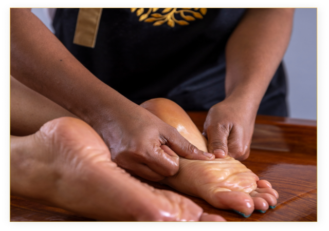
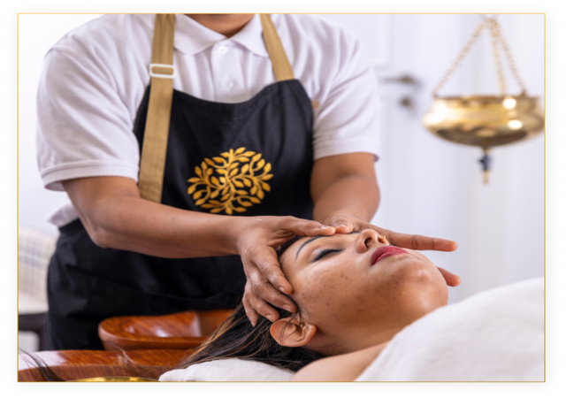

Pizhichil is a top-notch rejuvenation therapy specialized by Kerala Ayurvedic tradition. In this treatment, warm medicated herbal oils are squeezed all over the body periodically with simultaneous soft massage in a rhythmic way.
It is very relaxing and refreshing for the whole body and also takes care of the physical, mental, and emotional well-being of the person.
The meaning of the word Pizhichil is squeezing and the procedure involves squeezing of the warm and heated oil from a cloth. However, the first step in Pizhichil usually starts with applying oil on the head and body of the person receiving the massage. Then a cloth is placed or tied over the forehead so that the oil poured on the head does not enter the eyes. The oil that is used in Pizhichil can be varied ranging from sesame oil to ghee to other types of thailams which are made by combining various herbal oils. The type of Ayurvedic oil used on a person depends on his or her medical conditions and requirements. The massage is given by three or four masseurs depending on the medical conditions and requirement of the person receiving it. A gentle, synchronized massage of up and down stroke is carried out on all parts of the body except for the head. A cloth dipped in lukewarm medicated oil is squeezed over the patient’s body uniformly and then rubbed smoothly by the masseurs. Special caution has to be taken so that the patients head does not get sweat or the body gets cold during the massaging. The person receiving the massage is usually required to change his positions seven times for optimal heat and oil therapy. A normal Pizhichil lasts for 60 to 90 minutes and is taken for a period of 7 to 21 days.
People suffering from muscular aches and pains, rheumatic problems, paralysis, osteo- arthritis, insomnia, depression and sexual problems are eligible for undergoing Pizhichil.
If a person is suffering from fever or indigestion, then he or she may not be able to undergo the treatment. Moreover, you ahould consult a doctor before undergoing the procedure.
Pizhichil does not have any side effects as such when done by trained professionals. If wrong methodology is used then a person can have complications like burning sensations, herpes, tiredness, hoarse voice, splitting paints in joints, vomiting, bleeding, fever, itching, skin rashes or irruptions.
Post Pizhichil procedure, the person is allowed to relax for a while. Ideally the body should not be exposed to cold or cold measures. The head is wiped off with a sterile cloth. After which the person is given another massage. Following which the person is asked to take a hot water bath.
Proper instruction should be followed in terms of food as while. Liquid or semi- solid food prepared with ginger, peppers and cumin’s should be eaten. Light digestible food always compliments a Pizhichil treatment. Other than this a person is advised to not do certain things like strenuous physical activities, exposure to sunlight, indulging in sexual intercourse and others.
Recovery will usually depend upon the period of the procedure but generally does not involve any downtime.
The results of the treatment are not permanent because it does not result in complete alleviation of the diseases or medical conditions that the person is having.